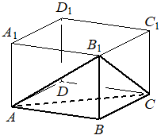

Впишите правильный ответ.
В прямоугольном параллелепипеде ABCD A 1 B 1 C 1 D 1 известно, что AB=9, BC=6, A A 1 =5. Найдите объём многогранника, вершинами которого являются точки A, B, C, B 1 .

КЭС: 7.4 Тела и поверхности вращения
Тип ответа: Краткий ответ
Источник ФИПИ